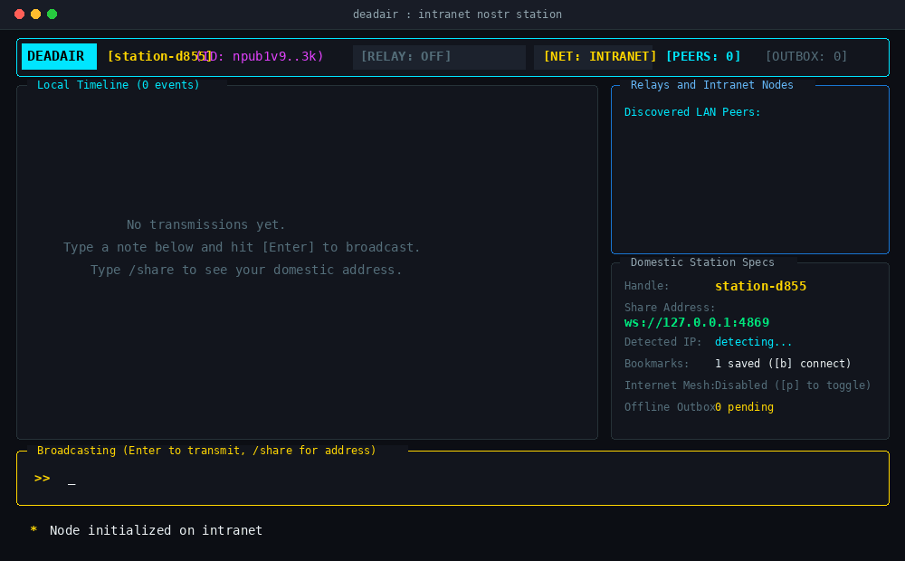

DEADAIR is a free, open-source chat and broadcast app made to keep people communicating when the global internet is shut down or censored.
When internet blackouts happen, apps like Telegram, Signal, WhatsApp, and Discord go dark because their servers are outside the country. However, local network connections still work: devices connected to the same Wi-Fi router or domestic network cables can still talk to each other.
DEADAIR uses this surviving local infrastructure. Any computer running DEADAIR can act as a local station or message relay for your family, coworkers, or contacts across the country—with zero central servers, no phone numbers, and no paid hosting.
DEADAIR is engineered with a simple concept: cut out the middleman server entirely.
Your cryptographic identity (a secp256k1 keypair) is created on your device on first launch. No phone number or email required.
Press [r] to start an internal WebSocket relay on port 4869. Your computer can now host chat for others.
Stations on the same Wi-Fi find each other via UDP beacons. Remote nodes outside the local network discover each other via automatic relay presence gossip.
Includes dedicated tabs for Main Mesh, Direct Messages, and Groups, picture attachments, and Base64-encrypted address tickets.
Real-World Scenarios:
- In an office or apartment building: Connect to the local Wi-Fi. Run DEADAIR. Everyone on that network sees each other automatically.
- Between friends across cities: One friend presses
[r]to turn on their relay, presses[s]to get their domestic IP address or Base64 Safe Ticket (e.g.deadair://...), and texts it to friends. Others paste it with/bookmark add <ticket>and start chatting immediately. - Private DMs & Group Channels: Use
/dm <user> <msg>for 1-on-1 private chat, or/group <name>to join topic channels.

The installer automatically installs any missing dependencies (C compiler, Rust, Git) and compiles DEADAIR natively for your machine. You can choose to install the Terminal TUI (command: deadair), the Desktop GUI (added to your Application Menu), Both, or completely Uninstall.
Linux & macOS (Bash):
curl -fsSL https://raw.githubusercontent.com/deltafsociety/dead-air/master/install.sh | bash
Windows (PowerShell):
irm https://raw.githubusercontent.com/deltafsociety/dead-air/master/install.ps1 | iex
To Uninstall DEADAIR:
curl -fsSL https://raw.githubusercontent.com/deltafsociety/dead-air/master/install.sh | bash -s -- --uninstall
Download pre-compiled static releases if you don't wish to compile from source:
| Command | Action |
|---|---|
/tab [1|2|3] |
Switch between [1] Main Mesh, [2] Direct Messages, and [3] Groups. |
/dm <user> <msg> |
Send a direct message in the private chat tab. |
/group <name> |
Switch active group channel (e.g. /group alerts). |
/image <path> [caption] |
Transmit a picture attachment across the mesh. |
/share |
Display your domestic connection address and Base64 Safe Ticket. |
/bookmark add <code|url> |
Connect to and bookmark a station or Base64 Safe Ticket. |
/decode <ticket> |
Decrypt and display the contents of a safe connection ticket. |
/like |
Like (+1 reaction) the selected note. |
/reply <msg> |
Send a threaded reply to the selected note. |
/clear |
Clear current timeline screen. |
/help |
Show available commands. |
| Key | Action |
|---|---|
Tab |
Cycle between Main Mesh, Direct Chat, and Groups tabs. |
1 / 2 / 3 |
Directly select Main, Direct, or Groups tab. |
j / Down |
Browse newer posts (pauses live stream). |
k / Up |
Browse older posts (pauses live stream). |
g / Home |
Resume live stream feed. |
l / L |
Like (+1) selected post. |
r |
Reply to selected post. |
R / F2 |
Toggle local relay on/off (port 4869). |
i / Enter |
Enter compose mode to type a message. |
Esc |
Exit compose mode. |
s |
Display your domestic address & Safe Ticket. |
b |
Reconnect all saved bookmarks. |
q / Ctrl+C |
Quit DEADAIR. |